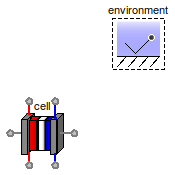
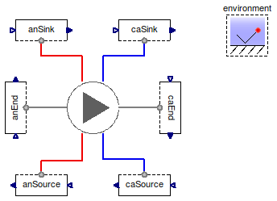
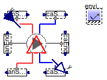
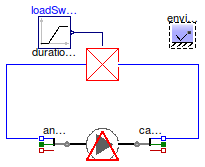

Table of Contents
- User's Guide
- Blocks
- Conditions
- Assemblies
- Regions
- Subregions
- Connectors
- Characteristics
- Units
- Quantities
- BaseClasses
Download
- Latest: FCSys-2.0.zip (**Please check back soon or contact kdavies4 at gmail.com.)

| Name | Description |
|---|---|
Isolated Cell model | |
| Apply boundary conditions to a cell according to a test profile | |
| Run a cell polarization | |
| CellProfileIO | Apply Conditions to a cell according to a test profile, with inputs and outputs |
| Cell interfaced to components from the Modelica package | |
| plot | Create plots using FCRes |
 FCSys.Assemblies.Cells.Examples.Cell
FCSys.Assemblies.Cells.Examples.CellCell model
| Type | Name | Default | Description |
|---|---|---|---|
| Cell | cell | redeclare Cells.Cell cell |
model Cell "Isolated Cell model"
extends Modelica.Icons.Example;
extends Modelica.Icons.UnderConstruction;
inner FCSys.Conditions.Environment environment(
analysis=false,
p=149.6*U.kPa,
T=333.15*U.K);
replaceable Cells.Cell cell;
end Cell;
FCSys.Assemblies.Cells.Examples.CellProfile
| Type | Name | Default | Description |
|---|---|---|---|
| Cell | cell | redeclare Cell cell |
model CellProfile "Apply boundary conditions to a cell according to a test profile" extends FCSys.Conditions.TestStands.TestProfile(anEnd(each graphite('incle-'=true, 'e-'(redeclare Modelica.Blocks.Sources.Ramp materialSpec(height=10000* U.A, duration=500)))), caEnd(each graphite('incle-'=true, 'e-'( redeclare Modelica.Blocks.Sources.Ramp materialSpec(height=-10000*U.A, duration=500))))); extends Modelica.Icons.UnderConstruction; replaceable Cell cell; equation connect(cell.anFPX, anEnd.face); connect(cell.caFPX, caEnd.face); connect(anSource.face, cell.anFPNegY); connect(cell.anFPPosY, anSink.face); connect(caSink.face, cell.caFPPosY); connect(cell.caFPNegY, caSource.face); end CellProfile;
FCSys.Assemblies.Cells.Examples.Polarization
| Type | Name | Default | Description |
|---|---|---|---|
| Cell | cell | redeclare Cell cell |
model Polarization "Run a cell polarization" extends CellProfile; extends Modelica.Icons.UnderConstruction; end Polarization;

| Type | Name | Default | Description |
|---|---|---|---|
| Cell | cell | redeclare Cell cell |
| Type | Name | Description |
|---|---|---|
| RealInputBus | u | Input bus |
| RealOutputBus | y | Output bus |
model CellProfileIO "Apply Conditions to a cell according to a test profile, with inputs and outputs" extends CellProfile(testStand(final inclIO=true)); extends FCSys.BaseClasses.Icons.Blocks.Continuous; extends Modelica.Icons.UnderConstruction; Connectors.RealInputBus u "Input bus"; Connectors.RealOutputBus y "Output bus"; equation connect(y, testStand.y); connect(u, testStand.u); end CellProfileIO;
 FCSys.Assemblies.Cells.Examples.CellModelica
FCSys.Assemblies.Cells.Examples.CellModelica
model CellModelica "Cell interfaced to components from the Modelica package" extends Modelica.Icons.Example; extends Modelica.Icons.UnderConstruction; Cell cell(anFP(redeclare FCSys.Subregions.Subregion subregions( each final inclX=true, each inclY=true, each graphite('incle-'=true, 'e-'(perfectMaterialDiff={{{{true,false}}}})), each gas(inclH2=true, inclH2O=true)))); inner FCSys.Conditions.Environment environment(analysis=false); Conditions.Adapters.Phases.Graphite caModelicaAdapt(A=cell.L_y[1]*cell.L_z[1]); Conditions.Adapters.Phases.Graphite anModelicaAdapt(A=cell.L_y[1]*cell.L_z[1]); FCSys.WorkInProgress.TanConduct tanConduct; Modelica.Blocks.Sources.Ramp loadSweep(duration=1000) "This is the arctangent of conductance."; equation connect(anModelicaAdapt.normal, cell.anFPX[1, 1]); connect(caModelicaAdapt.normal, cell.caFPX[1, 1]); connect(loadSweep.y, tanConduct.atanGstar); connect(tanConduct.p, caModelicaAdapt.pin); connect(tanConduct.n, anModelicaAdapt.pin); end CellModelica;
function plot "Create plots using FCRes" extends Modelica.Icons.Function; extends Modelica.Icons.UnderConstruction; algorithm Modelica.Utilities.System.command("loadres"); end plot;